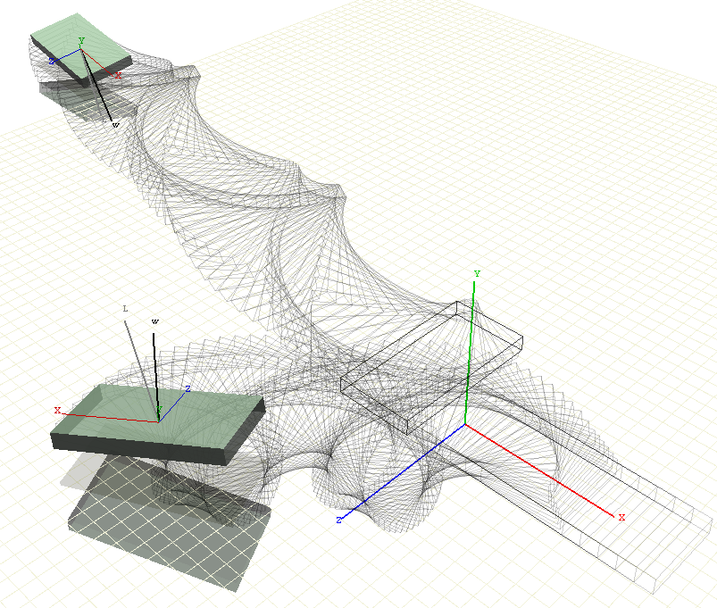

World of Bodies (WoRB) is a framework for the real-time simulation of rigid bodies.
Documents
-
Contacting Rigid Bodies
Simulation of collisions between rigid bodies using the WoRB library. Validation of the simulation by studying the conservation of
energy, linear momentum and angular momentum. Study of the simulation stability.
-
Rigid Body Motion in 3D
Theoretical framework. Mathematica notebook for a rigid body simulation using the Quat package.
Notes on frames of reference are here.
-
Rotations of Tensors using Quaternions
An expression of spatial rotations of a (moment of inertia) tensor in the pure quaternionic form.
-
Quat
Mathematica package that implements Hamilton’s quaternion algebra.
Allows symbolic transformations of quaternions to more extent than Mathematica's original.
-
Quat Test Bed
Regression tests for the Quat package.

How to use WoRB framework
Initialization
- Create a set of instances of Geometry and RigidBody
- Set mass and inertia tensor for the rigid bodies
- Set their initial location, orientation, velocity and angular velocity
- Apply any permanent external forces, e.g. gravity
- Create an instance of WorldOfRigidBodies
- Populate WorldOfRigidBodies::Objects with the list of instantiated rigid bodies
The main loop of the simulation
- Apply any temporary internal or external forces, e.g. spring forces or thrusts.
- Call WorldOfRigidBodies::SolveODE
- Render the bodies.
The single step of the simulation is in WorldOfRigidBodies::SolveODE, which performs the following steps
- Solve ODE on each body in the system
- Collision detection: find all collisions between all geometries
- Collision response: resolve all the collisions
- Update the internal derived quantities of the rigid bodies and geometries
Source Code
- Author:
- Mikica B Kocic
- Copyright:
- GNU Public License.
 1.8.0
1.8.0